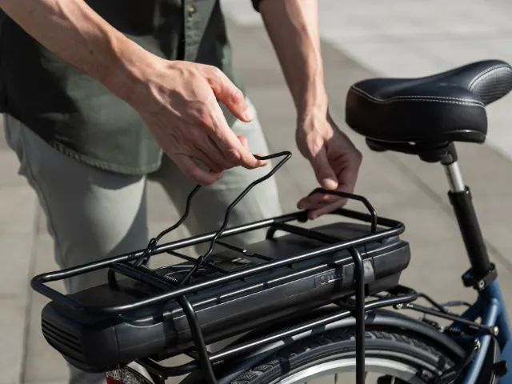

Partnerbijdrage
Zo vind je een e-bike die bij jou past
Gepubliceerd op 27 juni 2025

De elektrische fiets is niet meer weg te denken uit het straatbeeld. Of je nu dagelijks naar je werk fietst, ontspannen toertochten maakt of graag zonder al te veel inspanning door heuvelachtig gebied rijdt, een e-bike maakt fietsen toegankelijker en comfortabeler. Maar hoe kies je nu uit het grote aanbod vande beste e-bikes het model dat het beste bij jou past? Wij vertellen het je!
Verschillende factoren
De keuze voor een e-bike hangt af van meerdere factoren, zoals je gebruiksdoel, je fysieke gesteldheid, je budget en persoonlijke voorkeuren op het gebied van rijcomfort en design. Daarnaast zijn er verschillen in accucapaciteit, motorpositie, bediening en gewicht, die allemaal invloed hebben op de gebruikservaring.
Waarom kiezen voor een elektrische fiets?
Een e-bike biedt ondersteuning bij het trappen. Dit zorgt voor minder fysieke inspanning en meer comfort. Voor veel mensen betekent dit dat langere afstanden haalbaar worden en dagelijkse verplaatsingen gemakkelijker verlopen. Zeker voor woon-werkverkeer of mensen die moeite hebben met intensief fietsen, is een elektrische fiets een logische keuze.
Ook voor recreatief gebruik biedt een e-bike voordelen. Je kunt langere fietstochten maken zonder uitgeput thuis te komen. Bovendien blijft fietsen op deze manier leuk, zelfs bij tegenwind of heuvels.
Accu en actieradius
Een van de belangrijkste onderdelen van een e-bike is de accu. Deze bepaalt hoever je kunt fietsen op één lading. De actieradius hangt af van de capaciteit van de accu, maar ook van je rijstijl, het terrein en de weersomstandigheden. Accu’s zijn verkrijgbaar in verschillende groottes. Een grotere accu biedt een langere actieradius, maar is vaak zwaarder en duurder. Denk dus goed na over je gemiddelde afstanden en stem daar je keuze op af.

Motorpositie en rijervaring
Bij e-bikes is de motor meestal geplaatst in het voorwiel, in het achterwiel of bij de trapas (middenmotor). Een middenmotor zorgt voor een stabiele gewichtsverdeling en natuurlijk rijgevoel. Dit is dan ook de populairste optie, vooral voor wie vaak fietst of langere ritten maakt.
Een voorwielmotor voelt iets onnatuurlijker aan, maar is vaak goedkoper. Achterwielmotoren bieden krachtige ondersteuning, maar maken het verwijderen van het achterwiel wat ingewikkelder, bijvoorbeeld bij een lekke band.
Onderhoud en levensduur
Een e-bike vraagt om regelmatig onderhoud. De motor, accu en elektronische onderdelen moeten goed worden verzorgd om lang mee te gaan. Laat je e-bike daarom jaarlijks nakijken, vooral als je er intensief gebruik van maakt. Goed onderhoud voorkomt storingen en verlengt de levensduur van je fiets. Let ook op garantievoorwaarden. Een langere garantie op de accu en motor geeft vertrouwen in de kwaliteit van de onderdelen.
Fietsen testen en vergelijken
Het beste model kies je niet alleen op basis van specificaties, maar vooral door proef te rijden. Veel fietsenwinkels bieden de mogelijkheid om verschillende modellen uit te proberen. Zo ervaar je direct welk type ondersteuning, zadel en stuurpositie het beste bij je past.
Daarnaast helpt onafhankelijke informatie bij het maken van een weloverwogen keuze. Op de website van deConsumentenbond kun je modellen vergelijken op onder andere prijs, kwaliteit, accuduur en comfort. Dit biedt inzicht in welke e-bike voor jou de juiste investering is.
Gebruiksgemak en accessoires
Denk bij je keuze ook aan praktische zaken. Wil je een afneembare accu, zodat je die binnen kunt opladen? Hoe zwaar is de fiets en is hij gemakkelijk te verplaatsen of te tillen? Accessoires zoals een stevige bagagedrager, vering of een verstelbaar stuur kunnen je rijcomfort aanzienlijk verbeteren. Bepaal vooraf wat je belangrijk vindt en baseer daar je keuze op. Zo voorkom je dat je achteraf concessies moet doen aan comfort of functionaliteit.